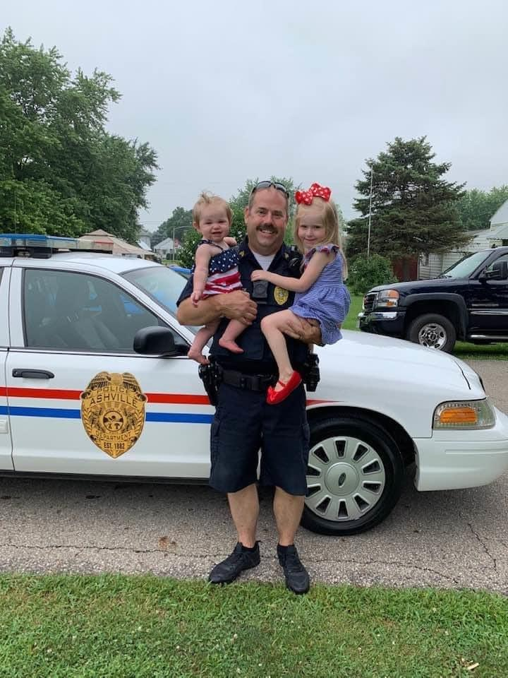
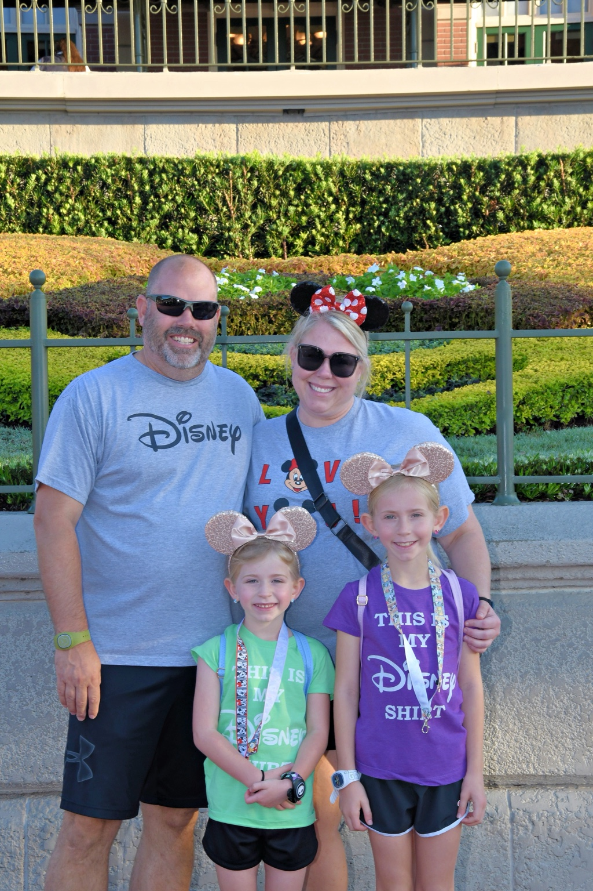
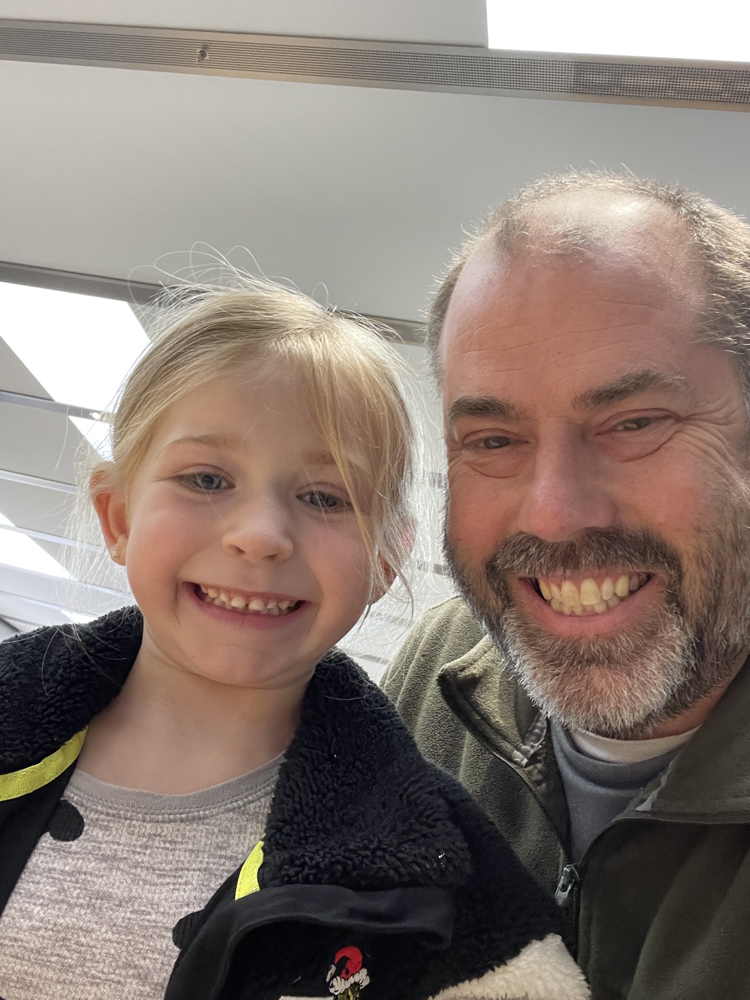
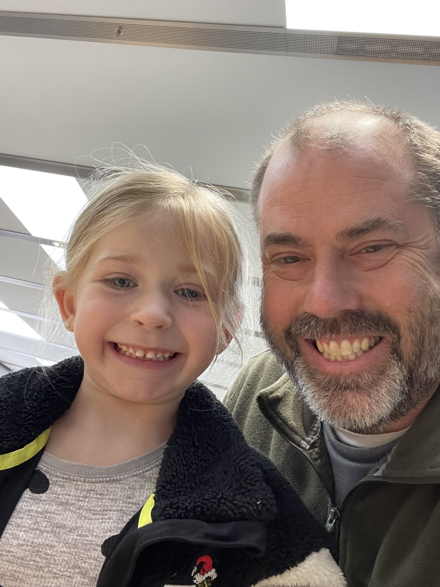

DONNIE MAYSE
FOR HARRISON TOWNSHIP TRUSTEE
A Trusted Voice For:
- Transparency in Government
- Proper Growth
Our Accomplishments
- Increased transparency with public record access
- Protected taxpayer dollars through responsible budgeting
- Championed ethical government practices
- Improved communication between residents and leadership
- Advocated for fairness and accountability at all levels
- Building a plan for a 2nd department in South Bloomfield
- Added 4 full-time positions


 
